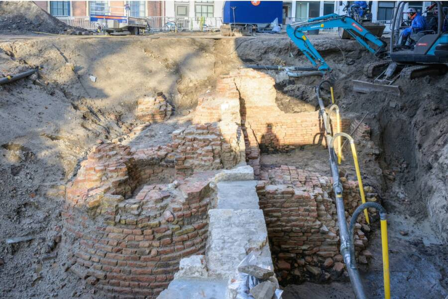

Future Plans For The Historic Gate Found At The Binnenhof
During the excavation process, archaeologists carefully analyzed the medieval brickwork, or kloostermoppen, that made up the gate’s foundations. They used 3D scanning to map out where each individual brick was positioned.
As Stokkel stated, “With a scan, we know exactly which brick goes where, and it will be placed back in the new entrance.”

Officials hope to incorporate the former foundations of the Spuipoort into the renovated entryway to the Tweede Kamer building once the ongoing construction work is complete. As of now, the renovations are expected to be completed by 2031. The process has faced significant delays due to rising costs and the interference of an unexpected nuisance: parakeets.
Hundreds of these tiny birds, which are considered an invasive species in the Netherlands, have descended on the construction site to wreak havoc. As soon as the scaffolding was removed from one building, the parakeets alighted on the facade to gnaw on the fresh paint and putty. They’ve also chewed on the cables of electric cranes, posing a safety hazard.
The parakeets are so disruptive that the government recently hired a falconer to release his bird in the area throughout the month of March to chase them away.
In the meantime, the brick foundations of the medieval Spuipoort are waiting to become part of the historic Binnenhof once more. “How cool is it to integrate the last gate into the new gate?” said Stokkel. “To us as city archaeologists, this is very special indeed.”